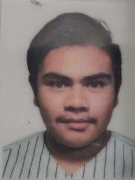

Martha Elizabeth Aguilar Hernandezes una mujer trabajadora, decidida y algo enojona y terca pero es una buena mujer al igual como madre y trabaja en una gasolinera actualmente y mi padre, Jesus Abraham Gonzalez Vazconceloz es un hombre muy organizado, serio, trabajador y decidido... Trabaja en Teotihuacan como supervisor en obras de construccion y tambien en Oficina aunque eso le canse siempre y cuando no lo pongan todo el dia en su Comptadora,. Y por ultimo esta mi hermana mayor, Daniela Zurisaday Gonzalez Aguilar, Alias:Pomni, es la persona que mas me ah acompañado y ayudado en toda mi vida actualmente esta haciendo un examen para la universidad IPN, ya presento el examen y le deseo mucha suerte ya que ella se lo merece y se ha esforzado mucho espero y se quede